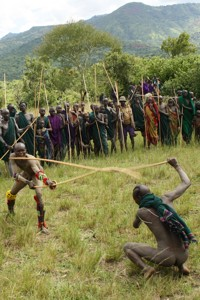
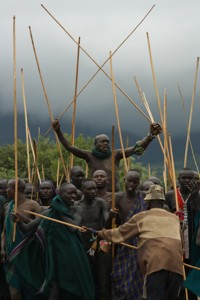
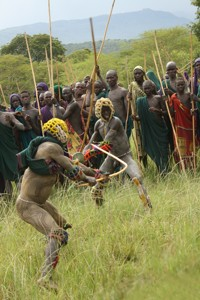
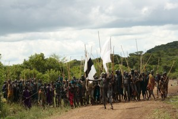
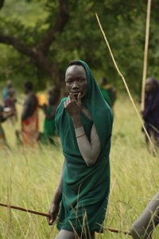
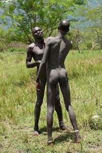
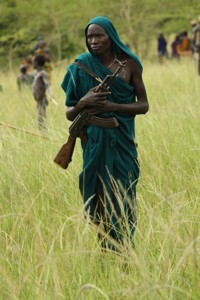
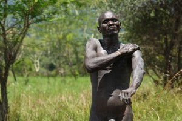
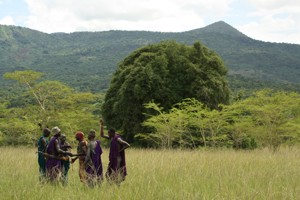

Photogallery


DONGA – FORBIDDEN FIGHTS OF SURMAS + BULLJUMPING – Maturity Rites of Hamars
MAYBE THE LAST CHANCE TO SEE THE BEST THAT COULD BE SEEN IN AFRICA!!!!
Term of expedition: 28.Aug. – 13.Sep. 2014

photo©Štěpán Štanc

photo©Štěpán Štanc

photo©Štěpán Štanc
Omo – Original Tribes of Africa
including mystical NYANGATOM tribe, if in luck or „Great African Adventure“

photo©Štěpán Štanc

photo©Štěpán Štanc
CUSTOM-MADE EXPEDITION basic information about the trip
DONGA – FORBIDDEN FIGHTS WHICH CAN GET YOU SCARED!!! AND STILL THEY ARE AMAZING…

photo©Štěpán Štanc

photo©Štěpán Štanc

photo©Štěpán Štanc
300 naked fighters, their bodies painted, are standing, holding 2.5 meters long rods and nervously awaiting the fight for which they have been training all year long… Hundreds of other Surmas are observing them, especially ladies who would evaluate their manly abilities!!!
Donga are cruel fights organized by Surma and Mursi tribes. Surma is the most feared tribe in the region. Even „friendly“ matches can be bloody, sometimes unintended death of one of the fighters can happen…
These are the reasons why the Government of Ethiopia tries to forbid the fights and why tourists – observers are strictly prohibited. Punishment is hard. The tourists are deported off the country, the drivers and local guides, who helped tourists to take part in the event, are sentenced to the prison for at least three months and loose their licences…
Nevertheless, we regularly visit Donga fights because there is nothing better and more intensive to be seen in contemporary Africa!!! Since the last stay in August 2013, we are afraid it will be over soon. Governmental restrictions are more and more strict year by year.
No matter how difficult it might be, we will try to experience Donga as long as possible!!!
YOU CAN BE A PART OF IT!!!! It may be the last occassion… Would you like? We would!!!

photo©Štěpán Štanc

photo©Štěpán Štanc
Bulljumping – male maturity rite of Hamar, Banna and Tsamai tribes. A young lad who would like to be considered an adult man has to cross, completly naked, running there and back several times cattle ridges. Any tumbling, a fall or a bad trip would make a fool of him and all his family. The top of the cow ridge must be reached by a direct jump up from the floor…
Donga and Bulljumping are included in one two-week-long expedition. And you can also enjoy a stay at Karo, Dasanech and Hamar tribes at least. You can see Tsamai and Abro tribes, and Konso, if we are in time. Nevertheless DONGA is our priority – that is why we go to Ethiopia…
What does up-to-date Ethiopia look like? As you can see! All the snaps of Donga and Bulljumping published in this material were taken during our last expedition in August 2013. It is still alive…
EXTRA PROGRAM TO DONGA
Předchozí stránka: Home
Následující stránka: Expeditions